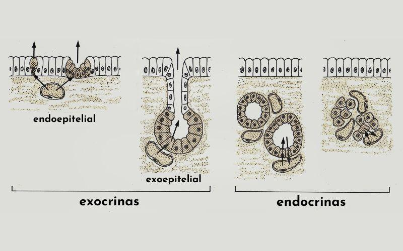
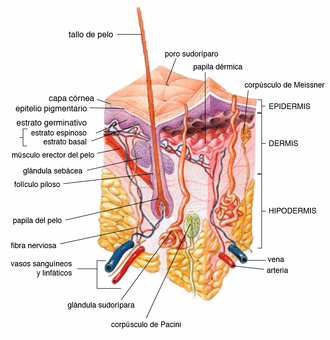
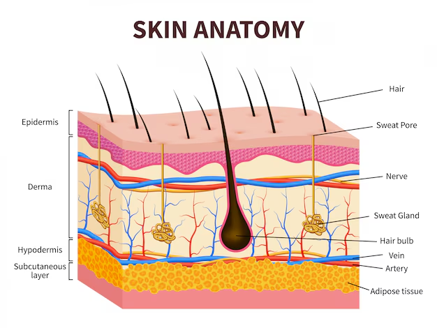
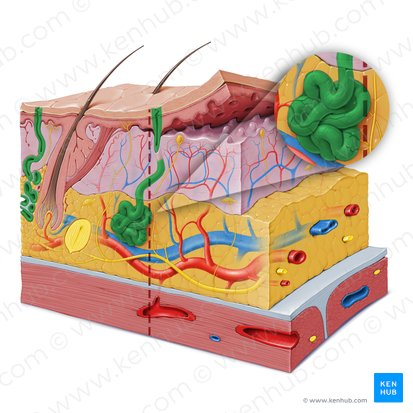
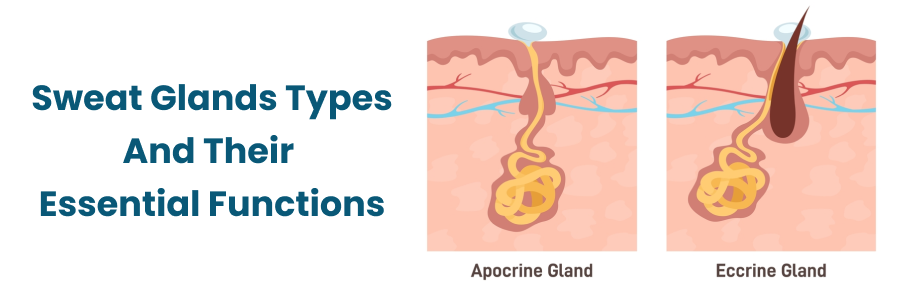
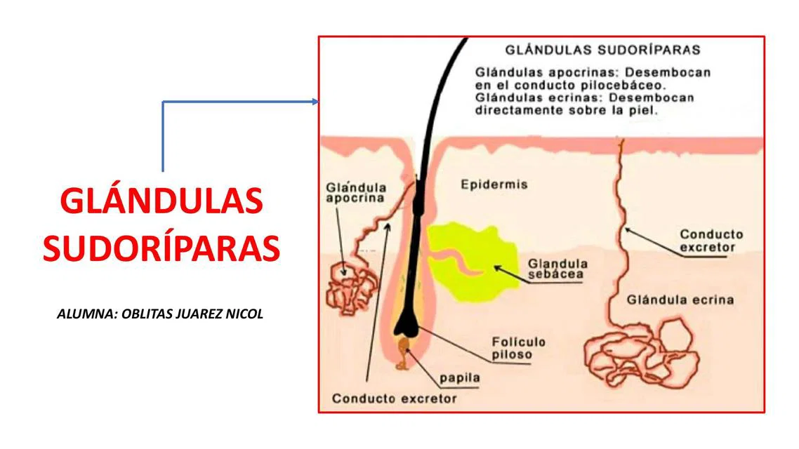
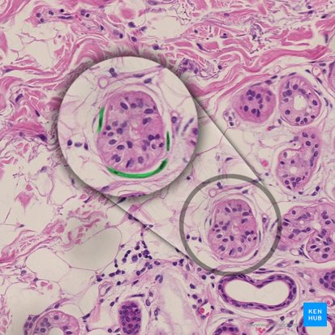
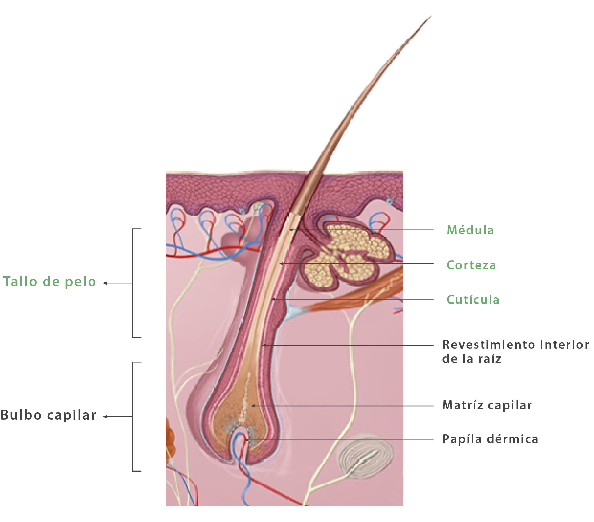

🧴 ¿Qué es el Sistema Exocrino?
El sistema exocrino está formado por un conjunto de glándulas que producen y secretan sustancias hacia el exterior del cuerpo o hacia las cavidades corporales (como el tracto digestivo), a través de conductos o ductos. A diferencia del sistema endocrino, que vierte hormonas directamente a la sangre, el exocrino siempre utiliza un conducto para transportar sus secreciones.
Las glándulas exocrinas más importantes del cuerpo humano están asociadas a la piel y al sistema tegumentario: las sudoríparas (sudor), sebáceas (sebo), mamarias (leche) y ceruminosas (cerumen). También incluyen las glándulas salivales, las lagrimales y las digestivas (ya vistas en el tema del sistema digestivo).
🎯 Objetivos de Aprendizaje
Al finalizar este tema serás capaz de: diferenciar glándulas exocrinas de endocrinas, identificar los tipos de glándulas de la piel y sus funciones, explicar el mecanismo de la sudoración y la termorregulación, describir la estructura del folículo piloso y sus glándulas asociadas, y comprender trastornos comunes del sistema exocrino.
⚖️ Glándulas Exocrinas vs. Endocrinas
Antes de estudiar las glándulas exocrinas de la piel, es fundamental entender la diferencia entre exocrinas y endocrinas. Ambas producen sustancias químicas, pero difieren en su modo de secreción y en el tipo de producto que liberan.

Figura 1: Tipos de glándulas según su relación con el epitelio: exocrinas (con conducto) y endocrinas (sin conducto). Fuente: Lifeder.
| Característica | Glándulas Exocrinas | Glándulas Endocrinas |
|---|---|---|
| Conducto (ducto) | ✅ Sí, poseen un conducto excretor | ❌ No, son ductless (sin conducto) |
| Destino de la secreción | Exterior del cuerpo o cavidades corporales | Directamente al torrente sanguíneo |
| Tipo de producto | Enzimas, sudor, sebo, moco, leche | Hormonas (insulina, adrenalina, etc.) |
| Velocidad de acción | Rápida (efecto local inmediato) | Lenta (efecto general retardado) |
| Duración del efecto | Corta (la secreción se diluye o elimina) | Larga (las hormonas circulan en sangre) |
| Ejemplos | Sudoríparas, sebáceas, salivales, pancreas exocrino | Tiroides, páncreas endocrino, suprarrenales, hipófisis |
¿Sabías que...?
El páncreas es una glándula mixta: su porción exocrina produce enzimas digestivas que viajan al duodeno por el conducto pancreático, mientras que su porción endocrina (los islotes de Langerhans) secreta insulina y glucagón directamente a la sangre. Es el único órgano que funciona como exocrino y endocrino simultáneamente.
🧬 La Piel: El Órgano Exocrino más Grande
La piel es el órgano más grande del cuerpo humano, con una superficie de aproximadamente 2 metros cuadrados y un peso de unos 4-5 kg. Está compuesta por tres capas principales: la epidermis (capa externa protectora), la dermis (capa media con vasos y nervios) y la hipodermis (capa de grasa subcutánea). En la dermis y la epidermis se encuentran las glándulas exocrinas.

Figura 2: Anatomía de la piel con glándulas sebáceas, sudoríparas, folículo piloso y receptores sensoriales. Fuente: Wikipedia.

Figura 3: Sección de piel humana mostrando las tres capas y estructuras anexas. Fuente: Freepik.

Figura 4: Vista tridimensional del sistema tegumentario con glándulas sudoríparas y sebáceas. Fuente: Kenhub.
💦 Glándulas Sudoríparas: Las Fábricas de Sudor
Las glándulas sudoríparas o sudoríparas son glándulas tubulares que producen sudor, un líquido acuoso que ayuda a regular la temperatura corporal, eliminar desechos y mantener la humedad de la piel. El cuerpo humano posee entre 2 y 4 millones de glándulas sudoríparas distribuidas por casi toda la superficie cutánea.

Figura 5: Tipos de glándulas sudoríparas: ecrina (todo el cuerpo) y apocrina (axilas, ingle). Fuente: Medicover Hospitals.

Figura 6: Glándulas sudoríparas apocrinas (desembocan en folículo) y ecrinas (desembocan en piel). Fuente: uDocz.

Figura 7: Vista microscópica de una glándula sudorípara ecrina. Fuente: Kenhub.
Tipos de Glándulas Sudoríparas
🔵 Ecrinas (Merocrinas)
Ubicación: Todo el cuerpo (~3-4 millones).
Conducto: Desemboca directamente en la superficie de la piel (poro sudoríparo).
Secreción: Sudor claro, acuoso, inodoro (~99% agua + sales + urea).
Función: Termorregulación principal. También elimina desechos y mantiene pH cutáneo.
Activación: Controladas por el sistema nervioso simpático (respuesta al calor, estrés, ejercicio).
🟣 Apocrinas
Ubicación: Axilas, ingle, areola mamaria, párpados, orejas externas (~2,000).
Conducto: Desembocan en el folículo piloso, no directamente en la piel.
Secreción: Líquido espeso, lechoso, rico en proteínas y lípidos (inicialmente inodoro).
Función: Señales químicas (feromonas). Se activan en la pubertad por hormonas.
Activación: Estímulos emocionales, estrés, excitación. La bacteria de la piel descompone la secreción, produciendo olor.
¿Sabías que...?
El cuerpo humano puede producir hasta 10-14 litros de sudor al día en condiciones extremas de calor. El sudor más denso del mundo se produce en las palmas de las manos y las plantas de los pies, que tienen la mayor concentración de glándulas ecrinas (~370 por cm²). Curiosamente, estas glándulas responden más al estrés emocional que al calor.
🛢️ Glándulas Sebáceas: El Aceite Natural de la Piel
Las glándulas sebáceas son glándulas holocrinas (su célula completa se desintegra para formar la secreción) que producen sebo, una sustancia oleosa y cerosa que lubrica la piel y el cabello, impidiendo que se resequen y protegiéndolos de agentes externos. Están asociadas al folículo piloso en casi todo el cuerpo, excepto en las palmas de las manos y las plantas de los pies.

Figura 8: Estructura del folículo piloso con glándula sebácea y músculo erector del pelo. Fuente: UGTO.
Funciones del Sebo
- Lubricación: Mantiene la piel y el cabello flexibles e hidratados.
- Impermeabilización: Forma una barrera que reduce la pérdida de agua transepidérmica.
- Protección antimicrobiana: El ácido graso del sebo tiene propiedades antibacterianas naturales.
- Transporte de antioxidantes: Lleva vitamina E y otros antioxidantes a la superficie cutánea.
- Regulación del pH: Mantiene la piel ligeramente ácida (pH 4.5-6.5), inhibiendo el crecimiento bacteriano.
¿Sabías que...?
Las glándulas sebáceas más grandes y activas se encuentran en la cara y el cuero cabelludo. Durante la pubertad, las hormonas andrógenas (testosterona) estimulan su actividad, lo que explica el aumento de la grasa facial y el acné en la adolescencia. Un adulto produce aproximadamente 1 gramo de sebo al día.
🍼 Otras Glándulas Exocrinas de la Piel
Además de las sudoríparas y sebáceas, la piel alberga otras glándulas exocrinas especializadas que cumplen funciones específicas de protección, nutrición y comunicación.
👂 Glándulas Ceruminosas
Ubicadas en el conducto auditivo externo. Producen cerumen (cera de oídos), una secreción espesa que protege el tímpano de polvo, insectos y microorganismos. También lubrica y limpia el canal auditivo. El cerumen tiene propiedades antibióticas y antifúngicas.
🥛 Glándulas Mamarias
Glándulas sudoríparas modificadas presentes en ambos sexos, pero funcionales solo en mujeres tras el embarazo. Producen leche para alimentar al recién nacido. Contienen agua, grasas, proteínas (caseína, lactoalbúmina), lactosa, vitaminas y anticuerpos (inmunoglobulina A).
👁️ Glándulas Lagrimales
Ubicadas en la órbita superior externa de cada ojo. Secretan lágrimas que humectan, lubrican y protegen la córnea. Las lágrimas contienen lisozima (enzima antibacteriana), inmunoglobulinas y nutrientes para la córnea, que carece de vasos sanguíneos.
👃 Glándulas de las Fosas Nasales
Glándulas mucosas que producen moco nasal, una secreción viscosa que humidifica el aire inhalado, atrapa partículas de polvo y microorganismos, y contiene enzimas antimicrobianas (lisozima). Un humano produce ~1 litro de moco nasal al día.
⚠️ Trastornos del Sistema Exocrino
Las glándulas exocrinas pueden verse afectadas por diversos trastornos que alteran su función, desde problemas cosméticos hasta condiciones médicas graves.
| Trastorno | Glándula afectada | Descripción |
|---|---|---|
| Acné | Sebáceas | Obstrucción del folículo piloso por exceso de sebo y células muertas. La bacteria *Cutibacterium acnes* inflama la zona. |
| Hiperhidrosis | Sudoríparas ecrinas | Producción excesiva de sudor sin causa aparente. Puede afectar manos, pies, axilas o todo el cuerpo. |
| Bromhidrosis | Apocrinas | Olor corporal desagradable causado por la descomposición bacteriana de las secreciones apocrinas. |
| Dermatitis seborreica | Sebáceas | Inflamación de la piel con descamación y enrojecimiento en zonas de alta concentración de sebo (cuero cabelludo, cara). |
| Miliaria (sarpullido) | Sudoríparas ecrinas | Bloqueo del conducto sudoríparo, acumulando sudor bajo la piel. Común en bebés y climas cálidos. |
| Fibrosis quística | Exocrinas múltiples | Enfermedad genética que produce secreciones exocrinas espesas y pegajosas, afectando pulmones, páncreas y sudoríparas. |
¿Sabías que...?
El olor corporal humano es único como una huella dactilar. Esto se debe a la combinación específica de bacterias cutáneas de cada persona, las hormonas, la dieta y los genes. Los perros pueden identificar a personas por su olor corporal con una precisión del 90%, lo que los convierte en excelentes rastreadores.
🤯 Datos Curiosos sobre el Sistema Exocrino
¿Sabías que...?
El sudor de las emociones (producido por estrés o miedo) es químicamente diferente del sudor por calor. Contiene más grasa y proteínas, lo que lo hace más viscoso y con un olor más pronunciado cuando las bacterias lo descomponen. Por eso el sudor de los nervios "huele peor".
¿Sabías que...?
Los bebes no sudan durante las primeras semanas de vida. Sus glándulas sudoríparas ecrinas no están completamente desarrolladas, por lo que no pueden regular su temperatura corporal por sudoración. Por eso es crucial no sobrecalentarlos.
¿Sabías que...?
La leche materna cambia su composición durante cada toma: al principio es más acuosa y rica en lactosa (calma la sed del bebé), y al final es más grasa y rica en grasas (sacia el hambre). También cambia según la edad del bebé y incluso si el bebé está enfermo, produciendo más anticuerpos específicos.
📝 Verifica tu Aprendizaje
Responde estas preguntas para comprobar lo que has aprendido.